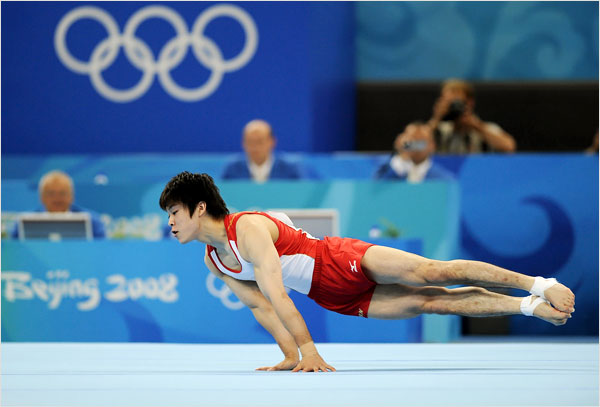
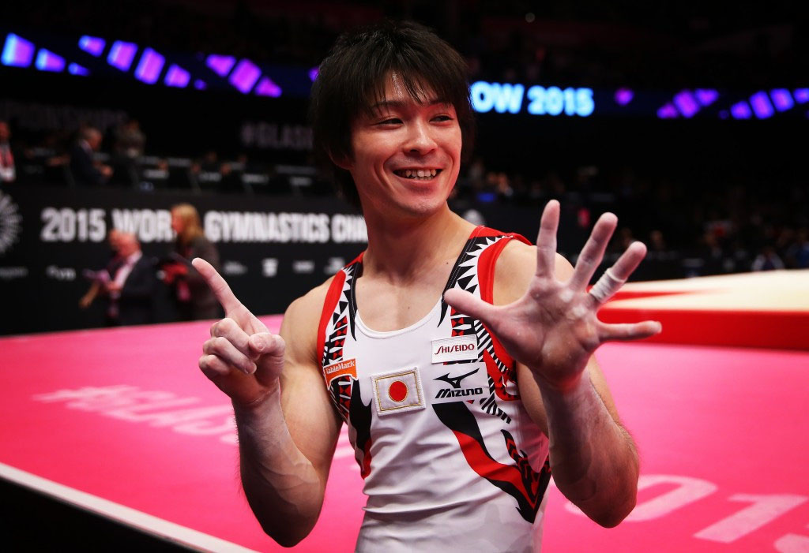
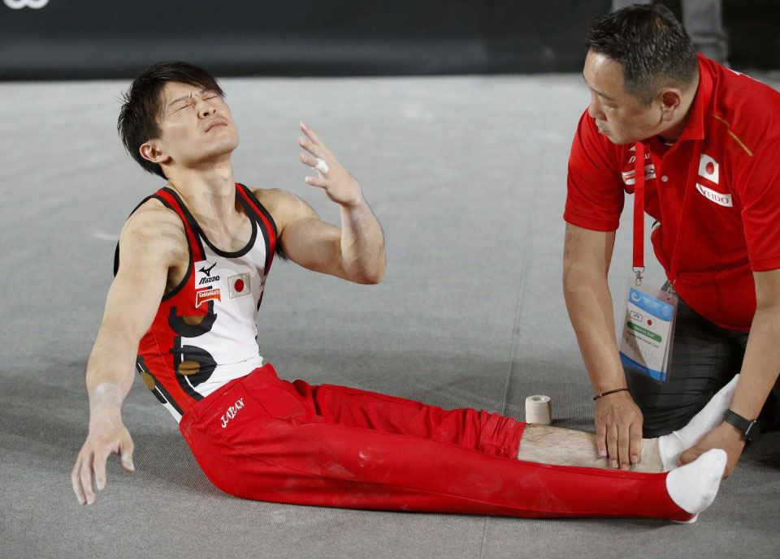
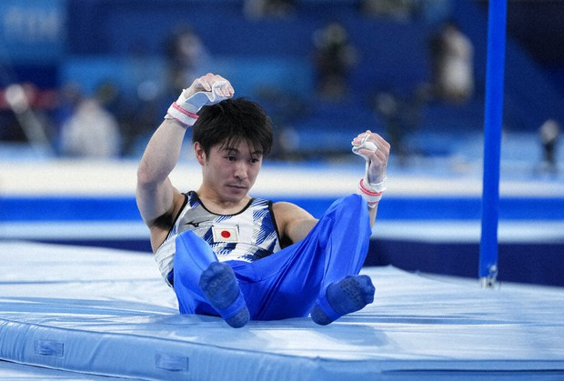

Kohei Uchimura was born in Kitakyushu, Fukuoka Prefecture of Japan.
Kohei Uchimura began gymnastics at Sports Club Uchimura, owned by his competitive gymnast parents.
Kohei Uchimura moved to Tokyo to train under gymnast gold medalist Naoya Tsukahara.
Kohei Uchimura competed in his first international event at the 2005 International Junior Competition in Japan.
March: Kohei Uchimura made his senior debut at the 2007 Paris World Cup representing Japan, where he won a bronze medal on vault.
August: Kohei Uchimura competed at the 2007 Summer Universiade, where he won the team title, a gold medal on floor, and a bronze medal on vault.
October: Kohei Uchimura competed at Japan’s National Championships, where he got 7th in all-around.
November: Kohei Uchimura competed at the international “Good Luck Beijing” event, where he won team silver with Japan.
May: Kohei Uchimura won a gold medal on floor at the World Cup.
August: Kohei Uchimura competed at the 2008 Olympic Games, where he contributed to team silver and won a silver medal in the all-around category.
November: Kohei Uchimura had the highest scores on floor and pommel horse at the Japanese National Championships.
SEE PICTURE
X
October: Kohei Uchimura competed at the 2009 World Championships, where he won all-around gold with a margin of 2.575. He also had the highest scores for floor, rings, vault, and high bar.
October: Kohei Uchimura participated in the 2010 World Championships representing Japan. He won all-around gold with a margin of 2.251. He won a silver on floor and bronze on parallel bars, assisting in Japan’s silver.
October: Kohei Uchimura competed at the 2011 World Championships, where he won his third all-around gold by a margin of 3.101 points, the same margin comparing second and fourteenth place. With this, he was the first male gymnast to win all-around gold three times and the first male or female gymnast to win all-around gold three times consecutively. He also won gold on floor, bronze on high bar, and helped Japan get a silver medal. He also won the Longines Prize for Elegance, rewarded to gymnasts who perform the most elegantly.
November: Kohei Uchimura competed at the 65th Japanese Championships, where he won four gold medals.
July-August: Kohei Uchimura competed at the London 2012 Olympics and placed ninth in qualifications due to falling several times. His fall on dismount on pommel horse sparked a great controversy, as Japanese coaches appealed to let it still count as a dismount. As he was already considered the greatest male gymnast of all time, many question whether he was only allowed this due to his status. He won another all-around gold and a silver in floor.
October: Kohei Uchimura competed at the 2013 World Artistic Gymnastics Championships, where he won his fourth all-around gold. He also won a bronze on floor, bronze on high bar, and a gold on parallel bars.
October: Kohei Uchimura competed at the 2014 World Artistic Gymnastics Championships, winning yet another gold all-around with a margin of 1.492. He also won a silver on high bar.
October: Kohei Uchimura competed in the 2015 World Artistic Gymnastic Championships and won his SIXTH CONSECUTIVE gold in all-around with a margin of 1.6. He also won gold on high bar and helped Japan get first place, their first team gold since 1978.
SEE PICTURE
X
August: Kohei Uchimura competed in the 2016 Summer Olympics as the team captain of Japan. He helped Japan win team gold, the first Japanese team gold since the 2004 Olympics. He also won a gold in all-around, making him the first gymnast in 44 years to win two consecutive all-around golds at the Olympics. He also became the second male gymnast in history to get a medal at the Olympics all-around event three times.
October: Kohei Uchimura competed in the 2017 World Artistic Gymnastics, where he attempted to defend his number one title. Unfortunately, tragedy struck when he broke his ankle on vault during qualification rounds, forcing his withdrawal, finally ending his 8 year streak of victories. This was his first time not being able to attain a medal in 9 years.
SEE PICTURE
X
October: Kohei Uchimura competed in the 2018 World Artistic Gymnastics Championships in limited capacity. He helped Japan win team bronze and won a silver on high bar.
Unfortunately, due to injury, Uchimura did not compete in any significant competitions.
July-August: Kohei Uchimura competed in the 2020 Summer Olympics, his fourth Olympic Games. At this point, Uchimura was 32 years old, well past the typical professional gymnast retirement age of early 20s. He said he could no longer go for an all-around medal due to the grueling physical requirements it had. Nevertheless, he competed in high bar, but unfortunately fell, not letting him compete in the finals, placing him 20th.
SEE PICTURE
X
October: Kohei Uchimura competed for the last time at the 2021 World Artistic Gymnastics Championships. This time, he only competed on the high bar and placed in 6th. This was his final performance of a legendary career, and many consider him to be the greatest of all time.
On January 10, 2022, Kohei Uchimura finally announced his official retirement from competitive gymnastics due to persisting injuries from the 2017 World Championships ankle injury.
Goodbye, King Kohei.